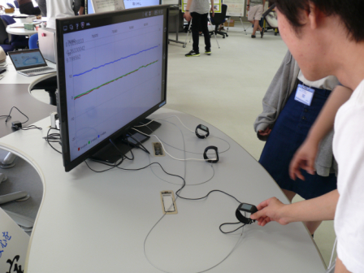
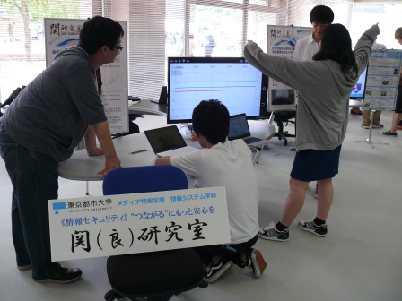
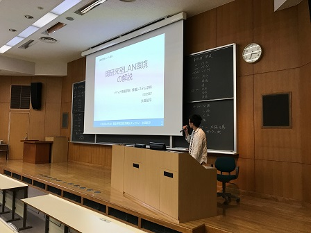
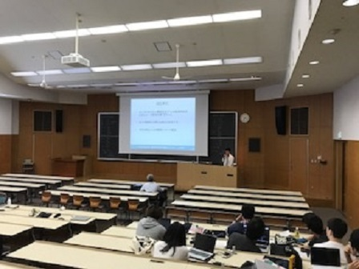
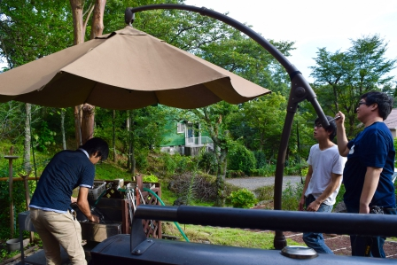
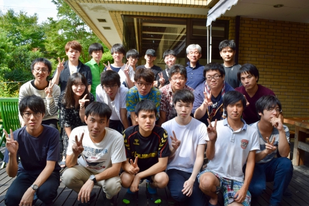

2017年度
 新3年生配属
新3年生配属横浜祭
関研究室は2017年6月10～11日の両日、横浜祭で研究室展示を行いました。 当研究室の松下 海央の研究によるAndroid wearを使用したデモを展示して 後援会特別賞を受賞しました。 事例研生は展示内容を説明することで、研究室及び研究内容の紹介に貢献しました。
 |
 |
執筆者：広報担当 小嶋海斗
 進捗報告会
進捗報告会
関研究室では2017年8月2日に進捗報告会を開催しました。内容は2017年度前期ゼミの振り返りです。各担務の中間報告や事例研、卒研の進捗報告をしました。事例研生は卒研がどのようなものかを知ることができる良い機会になりました。
 |
 |
執筆者：広報担当 澤信吾
ゼミ合宿
2017年9月13日から9月14日の2日間、関研究室発足以来4回目のゼミ合宿を行いました。宿泊先は静岡県伊東市にある「スイートヴィラ 四季の里」という貸別荘です。今回の目的は関研究室の先輩、後輩の親睦会でした。天候にも恵まれて夜はバーベキューやゲームなどをして親睦を深めました。
 |
 |
執筆者：広報担当 澤信吾
ミニオープンキャンパス
2017年9月23日、関研究室はミニオープンキャンパスの研究室展示に参加しました。横浜祭と同じく当研究室の松下 海央の研究によるAndroid wearを使用したデモを展示し、事例研生がデモの説明や研究室の紹介を高校生に対して行いました。
執筆者：広報担当 小嶋海斗
 That'sゼミナール参加
That'sゼミナール参加
2017年11月22日に、関研究室はThat’sゼミナールに参加しました。That’sゼミナールは2年生を対象として、3年次に配属される研究室についての情報を得ることを目的としたイベントです。 That’sゼミナールでは研究事例や研究室紹介をスライドショーにて展示し、事例研生は2年生に向けて研究内容の説明や質問対応を行いました。
執筆者：広報担当 小嶋海斗
 事例研究発表会・卒業研究発表練習会
事例研究発表会・卒業研究発表練習会
2018年2月6日、関研究室では事例研究発表会と共に、卒業研究発表練習会を行いました。事例研究発表会では事例研生が各々の研究や調査を発表し、卒業研究発表練習会では卒研生が翌週に控える卒業研究発表会に向けての予行練習をしました。発表後の質疑応答では、教授やゼミ生からの意見を受け止め、自らの発表を省みることで発表をより良いものにすることが出来ました。
執筆者：広報担当 小嶋海斗
卒業研究発表会
2018年2月13～14日の両日、関研究室は卒業研究発表会を行いました。
執筆者：広報担当 小嶋海斗